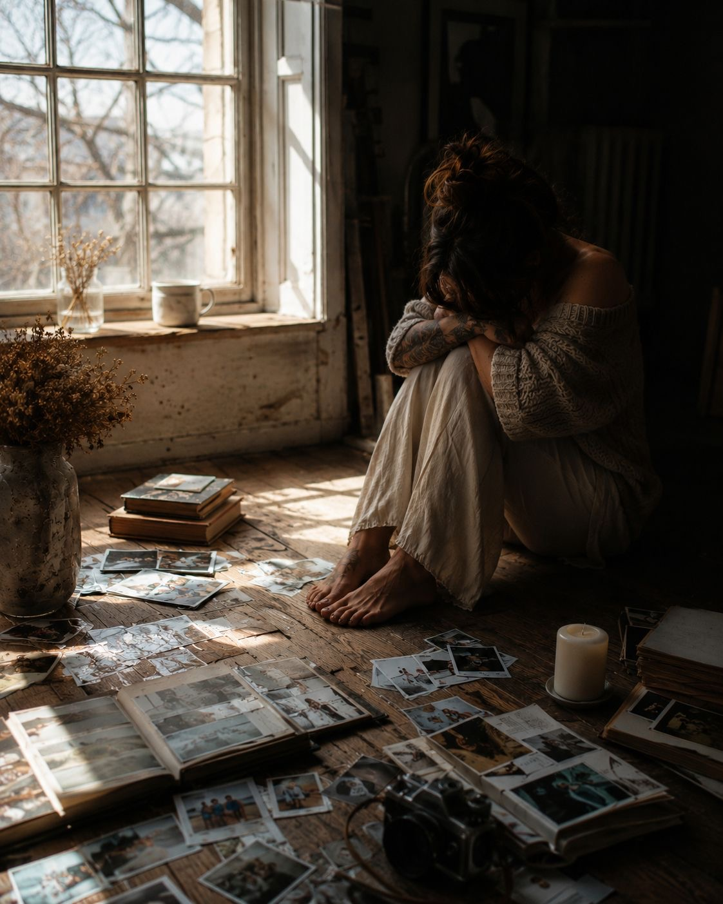

Til stede
Jeg har alltid fotografert.
Jeg tror at den eneste grunnen til at jeg konfirmerte meg var at jeg skulle ha råd til et kamera.
Jeg tror jeg har tatt bilder hver eneste dag siden da, og det blir en del bilder etter tredve år med fotografering.
Jeg tror jeg har prøvd å fange øyeblikkene, fange lyset, fange alle disse stundene der jeg ikke helt klarte å være til stede. Som at jeg skulle spare dem til senere.
I går kveld gikk jeg gjennom en haug med bilder, og tårene bare rant.
Det var så mange øyeblikk. Så mye lys.
Øyeblikk som har gått og aldri kommer tilbake.
Og det gikk opp for meg at jeg har gått glipp av så mye.
Så mye i bildene som fortalte en historie bare jeg kjenner.
Bildet fra restaurantbesøket i syden.
Kelneren som tok bilde av meg og gamle venninner jeg for lengst har mistet kontakten med.
Der jeg sitter med et smil uten glede i øynene, bare rundt munnen.
Og jeg ser det bare jeg vet.
Det bildet ikke viser.
At i veska som henger på stolryggen ligger det små flasker jeg kjøpte på taxfree.
Små flasker jeg drakk av hver gang jeg gikk på do.
Små flasker jeg surret inn i papir og trykket langt ned i den åpne søppeldunken.
Bildet av sykkelturen med sønnen min.
Smilet hans når han mestrer å sykle uten støttehjul.
Lyset som treffer sommerfregnene hans.
De små hendene som nå snart er voksne.
Hender som aldri blir små igjen.
Og det bildet ikke viser, men som jeg husker —
at jeg enda hadde noen timer der jeg var mamma.
Der jeg smilte og klappa og ropte:
«Bravo, du sykler helt selv.»
Mens jeg egentlig bare venta på timene der jeg kunne drikke den vinflaska mens jeg hørte på musikk og så på gamle bilder fra dager og år før det igjen.
For selv da var jeg ikke til stede.
Bilder av kaker jeg har brukt timesvis på.
Barnebursdager. Ferier. Konserter. Skogsturer. Båtturer. Jobbreiser. Venninneturer.
Bryllupsbilder fra et ekteskap som ikke varte likevel.
Hunder jeg har hatt. Steder jeg har bodd. Plasser jeg har besøkt.
Mennesker jeg har mistet. Mennesker som ikke lever lenger.
Bilder fra sykehus. Fra fødsler. Fra begravelser.
Fra julefrokoster, fra påskerebuser og sekkeløp.
Fra regnfulle nasjonaldager iført bunad og angst.
Fra fester og helt vanlige tirsdager.
Og ikke en eneste av de dagene har jeg egentlig vært til stede.
Jeg har hele tiden vært et steg foran eller et steg bak.
Tatt bilde av øyeblikket som om det skulle gi meg muligheten til å oppleve det en annen dag.
Det sies at definisjonen på helvete er dette:
Den siste dagen du har på jorda møter den du ble — den du kunne ha blitt.
Jeg ble fylt av angst der jeg satt på gulvet med alle bildene strødd rundt meg.
For jeg vil ikke sitte på livets siste dag og vite at jeg aldri lot meg selv bli den jeg kunne blitt.
Jeg ble fylt av en overveldende livssorg.
Hva har jeg gjort?
Hvor har jeg vært?
Over at jeg har levd i dette fengselet alkoholisme er.
For alkoholisme ser ikke alltid ut sånn folk tror.
Noen av oss lærer oss å smile med tomme øyne.
Møte opp.
Gå på jobb.
Levere i foreldremøter.
Dra i bursdager.
Le av vitser vi egentlig ikke hører.
Noen av oss lever helt vanlige liv mens vi sakte ødelegger oss selv i stillhet.
Og folk tror ofte at kjærlighet kan redde deg.
Men kjærlighet er ikke behandling.
Og edruskap …
det er ikke målstreken.
Det er startstreken.
For det virkelige arbeidet begynner først når alkoholen er borte.
Jeg sluttet ikke å drikke fordi jeg drakk for mye.
Jeg drakk for mye fordi jeg ikke klarte å drikke litt.
Én ble til to.
To ble til fem.
Fem ble til blackout.
Til løfter.
Til skam.
Til nye morgener der jeg sa:
«Aldri igjen.»
Og det er vel derfor jeg gråter sånn over disse bildene.
Fordi jeg ser ei kvinne som prøvde så hardt å være til stede.
Som tok bilde av livet sitt,
mens hun langsomt forsvant ut av det.
